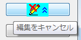

プロパティの詳細を簡略化または表示するには、ショートカットメニューを使用して、選択したノード、サブノード、および兄弟ノードを展開または折りたたみます。
フォーマットをテーマとして保存ダイアログでは、グラフオブジェクトやグラフプロパティの設定を、他のグラフにも適用できるようにテーマファイルに保存することができます。ダイアログはグラフかグラフオブジェクト（グラフタイトル、凡例など）を右クリックしてフォーマットをテーマとして保存オプションを選択して開くことができます。
| 新テーマの名前 | 新しいテーマの名前を指定するか、ドロップダウンリストから選択します。テーマオーガナイザ内のテーマは全てここにリストされます。 |
|---|---|
| 説明 | このボックスに入力したテキストは、マウスをテーマにかぶせた際テーマオーガナイザにヒントとして表示されます。 |
| 現在システムテーマ | このテキストボックスは編集不可で、システムテーマの名前を表示します。 |
| システムテーマとして設定 | このチェックボックスを選択して保存するとそのテーマファイルがシステムテーマとなります。 |
| 保存するフォーマット | このグループのチェックボックスの集まりは、新しいテーマファイルに保存するスタイルフォーマットの種類を決定します。デフォルトでは、すべてのオブジェクトプロパティを保存するすべてとなっています。すべてをクリアにしたい場合は、保存したいフォーマット、例えばカラーマップ、フォント、色、テキストの1つもしくはいくつかを選択します。 |
| OK | 新しいテーマが保存され、ダイアログが閉じます。 |
| キャンセル | キャンセル をクリックして、テーマファイルを保存せずにダイアログを閉じます。 |
| テーマ詳細の編集 | テーマの詳細を編集します。詳細については以下のテーマ詳細の編集 をご覧下さい。 |
| 編集をキャンセル | これはテーマ詳細の編集ボタンがクリックされているときのみ有効です。このボタンをクリックすると、テーマに行った変更をすべて取り消し、シンプルモードのダイアログに戻ります。 |
| フィルタ | フィルターでテーマを編集するためのテーマプロパティのフィルタリングダイアログボックスを開きます。このダイアログの詳細は、テーマプロパティのフィルタリングを参照してください。 |
| 『リストビュー』チェックボックス | このチェックボックスを選択してリストビューにプロパティを表示します。 |
テーマ詳細の編集 ボタン( )をクリックしてフォーマットをテーマとして保存を開きテーマの詳細を編集します。このボタンをクリックすると 編集キャンセル ボタン()になります。以下は、フォマットをテーマとして保存ダイアログを拡大したものです。
下側パネルでは、テーマプロパティはツリービューに表示されます。値列をクリックしてプロパティを変更できます。
プロパティやツリーのブランチ部分で右クリックして、ショートカットメニューから削除を選択することができます。また、フォルダ（ツリーノード）のアイコンを右クリックしてコンテクストメニューから追加を選択し、ツリーにプロパティ/ブランチを追加することもできます。
プロパティの詳細を簡略化または表示するには、ショートカットメニューを使用して、選択したノード、サブノード、および兄弟ノードを展開または折りたたみます。
|
フォーマットをテーマとして保存する場合、テーマのノードはデフォルトで統合されています。つまり、レイヤ、プロット、軸などは全体としてコントロールできます。この挙動はシステム変数@TCT、の設定によって制御されています。デフォルト値は75で、これは統合化がオンになっている事を示します。
保存されたテーマが選択したオブジェクトにのみ適用させるには、テーマのノードの統合化をオフにできます。そのためにはシステム変数@TCT を0に変更します。
(Note: この方法を適用できる最低必要バージョンはOrigin9 SR0です。それ以前のバージョンでは@TCT=101 と設定すると似たような効果を得る事ができます。)
以下のミニチュートリアルはこのテーマのノード統合化がどのように機能しているのか示します。
|